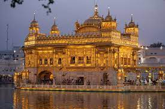
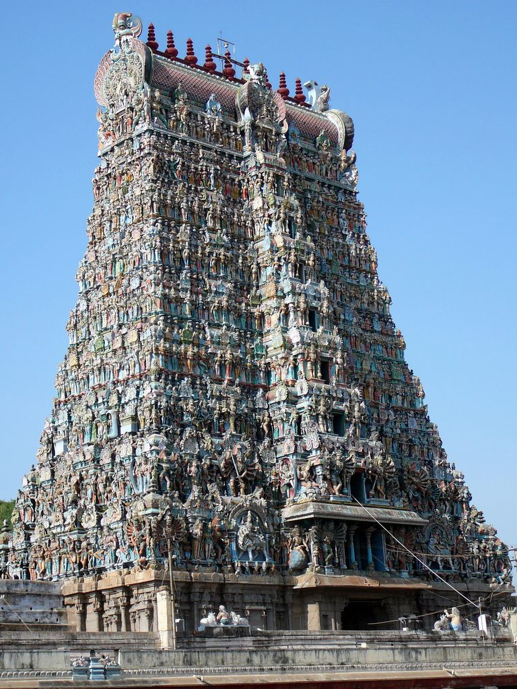
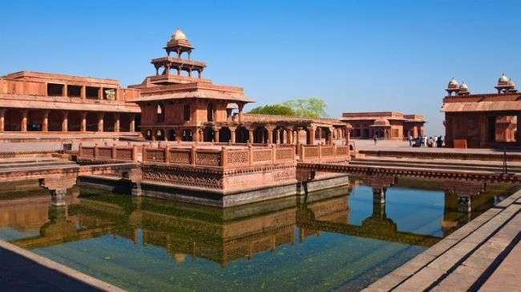
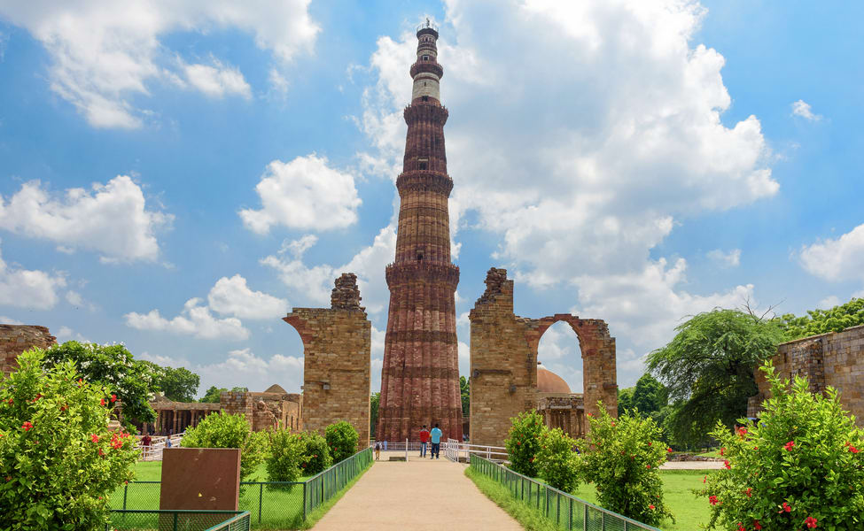

Monuments of India

The Taj Mahal
The Taj Mahal is one of the most beautiful and famous buildings located in the city of Agra.
This white marble monument was built by a Mughal Emperor called Shahajahan in memory of his beloved
wife.Taj Mahal is open every day (Friday Closed) 30 minutes before sunrise up to 30 minutes before sunset.
Taj Mahal is open every day (Friday Closed) 30 minutes before sunrise up to 30 minutes before sunset.

The Golden Temple
The Golden Temple known as the Harmandir Sahib. This is the most famous and sacredSikh Gurdwara in Punjab, India, adorned with rich history and gold gilded exterior. It's all made of 24-karat gold, which is much purer than the 22-karat gold present in Indian households today. The fourth Guru of Sikhs, Guru Ram Das, who had initially constructed a pool here, founded Amritsar, which houses the Golden Temple or Harmandir Sahib.

Meenakshi Temple
Meenakshi Temple is situated on the Southern banks of Vaigai River in the temple city Madurai. This temple is dedicated to Parvati and her consort, Shiva and is visited by most Hindu and Tamil devotees and architectural lovers throughout the world. It is believed that this shrine houses 33,000 sculptures The temple has a 'Hall of Thousand Pillars' and each pillar is carved with various sculptures. Meenakshi Temple has a pond called 'Porthamarai Kulam' or 'The Golden Lotus Pond' in its complex.

Fatehpur Sikri Fort, Agra
An architectural gem in red sandstone, Fatehpur Sikri Fort’s credit goes to the great Mughal Emperor Akbar. Some popular things to see within its walled premises include Buland Darwaza, Jama Masjid, Akbar’s residence, Panch Mahal, Ibadat Khana,and the famous courtier Birbal’s house.Fatehpur Sikri contains other early Mughal structures, exhibiting both Muslim and Hindu architectural influences. They include the palace of Akbar’s wife (Jodha Bai), a private audience hall, and houses. The Mughal capital was moved to Delhi in 1586 because of Fatehpur Sikri’s inadequate water supply.

Qutub Minar
Qutub Minar, also known as victory tower, is one of the tallest monuments in Asia and the tallest brick minaret in the world, at 72.5m. Featuring beautiful carvings and intricate designs on marble and red sandstone, this architectural wonder is a photographer’s delight.Qutub Minar is one of the highest minarets in India with a height of 73 metres. It is a UNESCO World Heritage Site and the tallest brick minaret in the world.